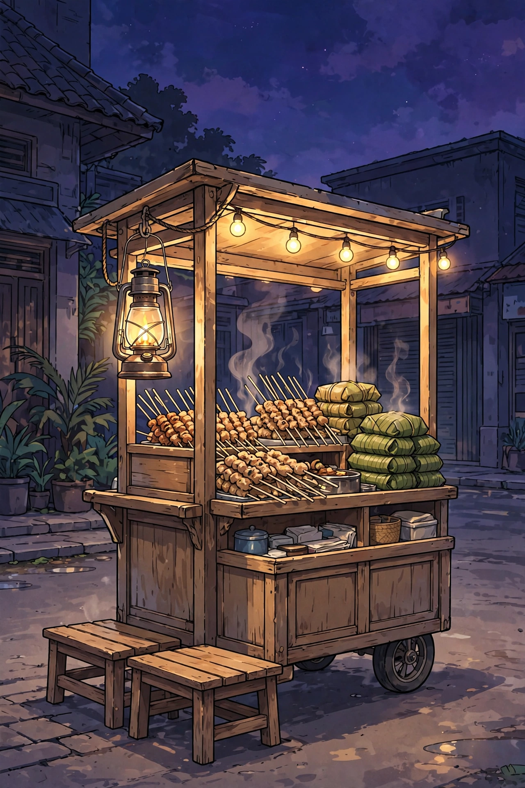
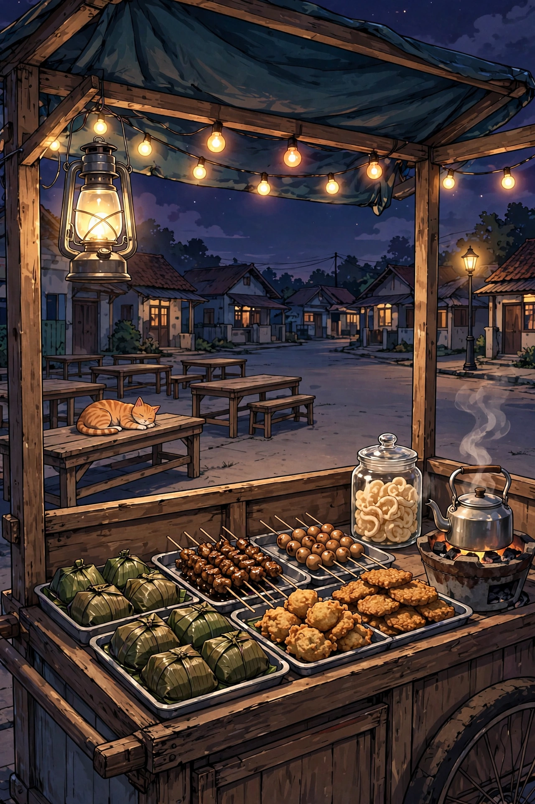
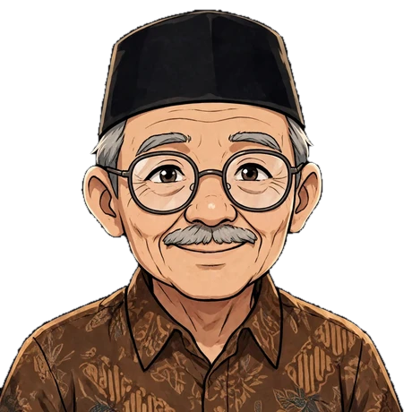
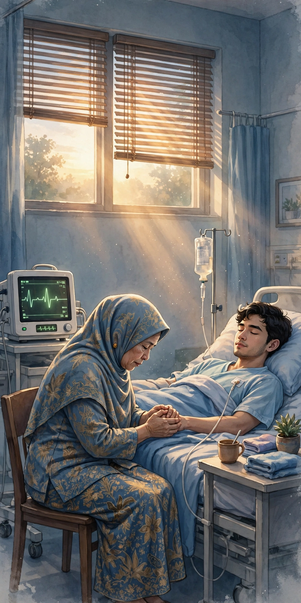

ANGKRINGANSIMULATOR
Cara Main
Kamu adalah Raka, penjaga angkringan pojok perempatan. Angkringan buka pukul 21.00 dan tutup pukul 04.00.
Racik sendiri pesanannya: pilih wadah (gelas/mangkuk), lalu klik bahannya. Kalau satu menu dipesan banyak (misal Bakwan ×2), semua porsinya dibikin sekaligus dalam satu racikan: sekali klik, bahan langsung masuk sejumlah porsinya — tidak perlu meracik satu per satu. Stok berkurang sesuai jumlah bahan yang masuk. Bahan yang tampil mengikuti jenis pesanannya: pesanan minuman menampilkan semua bahan minuman, pesanan makanan menampilkan semua bahan makanan. Bahan di luar resep tetap bisa dimasukkan, tapi racikan yang melenceng dari resep bikin bintang turun. Tiap menu cuma menawarkan cara masak yang cocok: sate dibakar di atas anglo, gorengan digoreng, minuman diseduh lalu dituang dengan menahan tombol dan melepasnya di zona hijau. Racikan dinilai bintang 1–3; racikan yang pas dapat bonus tip. Langkah masak dan tuang itu wajib: menu yang harusnya digoreng/dibakar tapi disajikan mentah — atau minuman yang tidak dituang air — langsung bintang 1, pelanggan marah dan pergi tanpa membayar. Bintang 3 hanya untuk racikan yang bahannya pas, cara masaknya benar, dan tuangannya pas. Hati-hati: racikan yang jauh dari pesanan bikin pelanggan marah dan pergi tanpa membayar.
Siang hari (mulai Malam 2): baca grup chat warga untuk petunjuk, lalu Belanja Sore untuk membeli stok bahan dengan uang laci. Stok sisa terbawa ke malam berikutnya. Sebagian pelanggan mungkin minta kasbon — tercatat di Catatan.
Dengarkan cerita mereka. Setiap pelanggan membawa cerita — dan petunjuk. Petunjuk penting tercatat otomatis di Catatan (tombol buku di atas).
Jaga selama lima malam. Perhatikan jam 03.33… dan pria yang selalu datang di jam itu.
Login Google di layar judul menyimpan progresmu — malam yang selesai, uang laci, lencana, dan catatan — ke akunmu, jadi bisa lanjut di HP lain. Tanpa login pun tetap bisa main sebagai tamu; progres tamu tersimpan di perangkat ini saja.


Ketuk wadahnya — setelah itu tampil semua bahan sesuai jenis pesanannya: pesanan minuman menampilkan bahan-bahan minuman, pesanan makanan bahan-bahan makanan. Wadah yang salah tidak bisa diisi.
Semua racikan sudah jadi dan tersaji rapi. Tinggal berikan ke pelanggan — jangan sampai kesabarannya keburu habis.
Kartu Malam
Daftar Malam
Lima malam jaga. Satu tanggal yang tidak pernah berganti.
Menjelang Malam Kedua
Grup chat warga ramai sejak pagi. Baca baik-baik — kadang mereka tahu sesuatu lebih dulu darimu.
